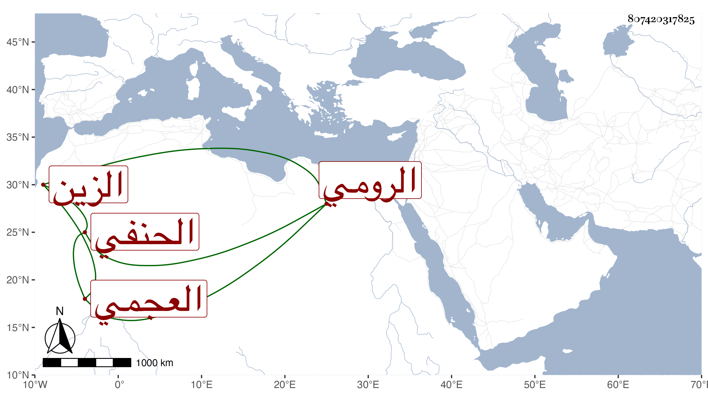

0902Sakhawi.DawLamic.ITO20230111-ara1.EIS1600.807420317825
Biography ID: 807420317825
352
حبيب بن يوسف بن عبد الرحمن الزين الرومي العجمي الحنفي . قرأ للثمان على الشمس الغماري بقراءته على أبي حيان وكذا قرأ على التقي البغدادي وروى عن الشمس العسقلاني وغيره وأم بالأشرفية برسباي واستقر في مشيخة القراء بالشيخونية وبالمؤيدية وتصدى للاقراء فانتفع به خلق . وممن تلا عليه للسبع الشمس بن عمران وابن كزلبغا ، واستقر في امامة الأشرفية بعده ورافقه في الأخذ عنه التقي أبو بكر الحصني وذلك في سنة اثنتين وأربعين أو بعدها وروى عنه بالاجازة ابن أسد والتقي بن فهد وآخرون .
